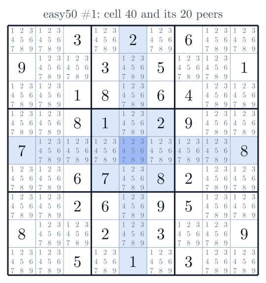
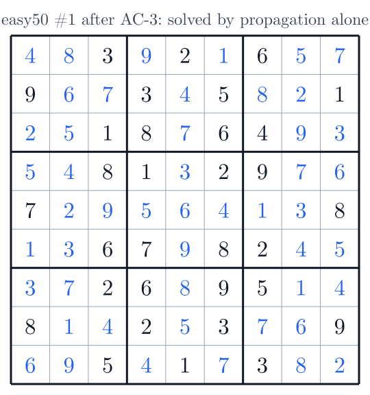
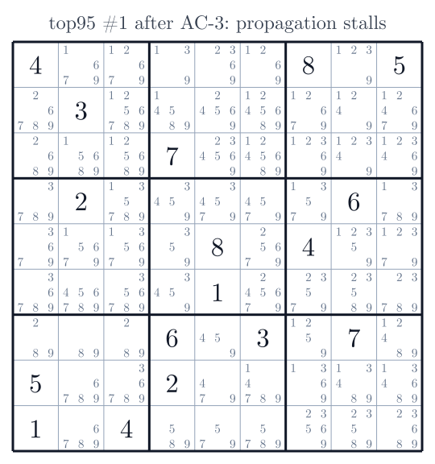
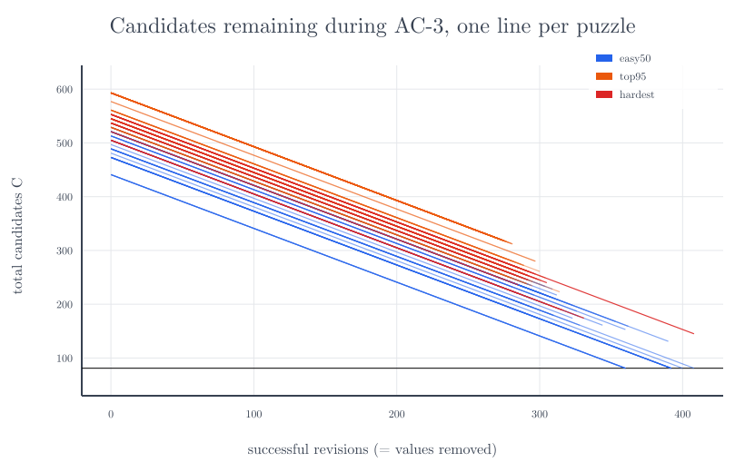
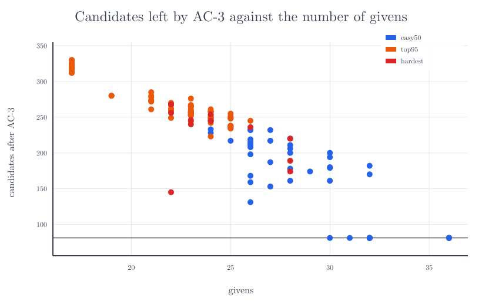

AC-3 on Sudoku: What Arc Consistency Can and Cannot Deduce
Abstract
AC-3 (Mackworth, 1977) shrinks the domains of a constraint-satisfaction
problem by deleting every value that has no compatible partner in a neighbour's
domain, and repeats until nothing changes. We derive why its result does not
depend on the order in which arcs are processed, bound its work, and show that
for Sudoku's "different digits" constraints it is exactly the familiar naked
single rule. We then run it on all 156 puzzles of Peter Norvig's three
collections in dm::datasets::sudoku(). AC-3 alone solves some easy puzzles
outright, but on the hard ones it stalls with hundreds of candidates left. Every
table, number and figure is produced by the C++ blocks in this document.
The data
dm::datasets::sudoku() downloads (once) and parses Norvig's three puzzle
files: easy50 (50 puzzles from Project Euler), top95 (95 hard puzzles) and
hardest (11 puzzles collected as "the hardest"). Each row is one puzzle,
written as 81 characters read row by row, with . for a blank. The givens
column counts the filled cells.
#include <dm/dm.hpp>
namespace agg = dm::agg;
int main() {
const auto puzzles = dm::datasets::sudoku();
std::print("{} puzzles, columns {}.\n\n{}\n", puzzles.nrows(),
puzzles.columns(), puzzles.head(3).to_md());
std::print("\n{}\n",
puzzles | dm::group_by("collection") |
dm::summarise(agg::n("Puzzles"),
agg::mean("givens", "Mean givens"),
agg::min("givens", "Min givens"),
agg::max("givens", "Max givens")) | dm::to_md(1));
}156 puzzles, columns ["collection", "id", "puzzle", "givens"].
| collection | id | puzzle | givens |
|---|---|---|---|
| easy50 | 1 | ..3.2.6..9..3.5..1..18.64....81.29..7.......8..67.82....26.95..8..2.3..9..5.1.3.. | 32 |
| easy50 | 2 | 2...8.3...6..7..84.3.5..2.9...1.54.8.........4.27.6...3.1..7.4.72..4..6...4.1...3 | 30 |
| easy50 | 3 | ......9.7...42.18....7.5.261..9.4....5.....4....5.7..992.1.8....34.59...5.7...... | 28 |
| collection | Puzzles | Mean givens | Min givens | Max givens |
|---|---|---|---|---|
| easy50 | 50 | 28.4 | 22 | 36 |
| top95 | 95 | 20.6 | 17 | 26 |
| hardest | 11 | 24.5 | 22 | 28 |
The hard collections give fewer digits. Below we see that the number of givens predicts how far AC-3 gets quite well, though not completely.
Sudoku as a constraint-satisfaction problem
A binary constraint-satisfaction problem (CSP) has variables \(x_1,\dots,x_n\), a finite domain \(D_i\) of allowed values for each, and constraints \(R_{ij}\subseteq D_i\times D_j\) between some pairs. A solution assigns every \(x_i\) a value in \(D_i\) with \((x_i,x_j)\in R_{ij}\) for every constraint. We store each constraint in both directions, as \(R_{ij}\) and its converse \(R_{ji}=\{(b,a):(a,b)\in R_{ij}\}\), and call an ordered pair \((i,j)\) an arc.
Sudoku has one variable per cell, so \(n=81\). A blank cell starts with \(D_i=\{1,\dots,9\}\) and a given digit \(g\) with \(D_i=\{g\}\). Two cells are peers if they share a row, column or \(3\times 3\) box. Each cell has \(8+8+4=20\) peers: 8 in its row, 8 in its column and 4 more in its box. Each pair of peers carries the constraint
so there are \(e=81\cdot 20=1620\) arcs. sudoku::peers() and sudoku::arcs()
build them, and sudoku::board() draws domains with pencil marks: a single
value as a large digit, and the surviving candidates of other cells as small
digits. The figure shows the first easy puzzle before any deduction, with the
centre cell and its peers shaded.
#include <dm/dm.hpp>
namespace sudoku = dm::algorithms::sudoku;
int main() {
std::filesystem::create_directories("build");
const auto puzzle = dm::datasets::sudoku().string_at("puzzle", 0);
std::vector<int> shaded{40};
std::ranges::copy(sudoku::peers(40), std::back_inserter(shaded));
std::print("cell 40 has {} peers; {} arcs in all\n", shaded.size() - 1,
sudoku::arcs().size());
sudoku::board(sudoku::domains(puzzle), puzzle, shaded).title(
"easy50 #1: cell 40 and its 20 peers").save_svg("build/ac3_peers.svg");
}cell 40 has 20 peers; 1620 arcs in all

Arc consistency and AC-3
An arc \((i,j)\) is consistent when every value in \(D_i\) has a support in \(D_j\):
A CSP is arc consistent when all of its arcs are. The basic step, \(\mathrm{REVISE}(i,j)\), makes one arc consistent by deleting the unsupported values:
AC-3 keeps a queue of arcs, initially all of them. It removes an arc from the queue and revises it. If \(D_i\) shrank, it puts back every arc \((k,i)\) with \(k\neq j\), because those values of \(x_k\) may have lost their support in \(D_i\). It stops when the queue is empty, or reports failure as soon as a domain becomes empty.
Soundness: no solution is lost
Claim. If \(s\) is a solution with \(s_v\in D_v\) for every \(v\), then \(s_v\) stays in \(D_v\) throughout AC-3.
Proof. Consider one call \(\mathrm{REVISE}(i,j)\) made while \(s_v\in D_v\) for all \(v\). Since \((s_i,s_j)\in R_{ij}\) and \(s_j\in D_j\), the value \(b=s_j\) supports \(a=s_i\), so \(s_i\) is kept. Induction over the sequence of revisions gives the claim. \(\square\)
So an empty domain proves the puzzle has no solution. If every domain ends as a single value, those values are the solution: AC-3 never removes a solution value, so the solution must be the only assignment left.
The result does not depend on the queue order
Call \(E=(E_1,\dots,E_n)\) a sub-domain of \(D\) if \(E_v\subseteq D_v\) for every \(v\). The union of two arc-consistent sub-domains \(E\) and \(E'\) is again arc consistent. A value \(a\in E_i\) has a support in \(E_j\subseteq E_j\cup E'_j\), and likewise for \(a\in E'_i\). There are finitely many sub-domains, so the union of all arc-consistent ones is itself arc consistent. It is the unique largest arc-consistent sub-domain \(D^\ast\).
Claim. AC-3 returns exactly \(D^\ast\), whatever order it takes arcs from the queue.
Proof. First, AC-3 never removes a value of \(D^\ast\). The soundness argument goes through with \(D^\ast\) in place of the single solution \(s\): while \(D^\ast\subseteq D\), each \(a\in D^\ast_i\) has a support \(b\in D^\ast_j\subseteq D_j\).
Second, the output is arc consistent. Consider the invariant every arc not in the queue is consistent. It holds at the start, when every arc is queued. After \(\mathrm{REVISE}(i,j)\), the arc \((i,j)\) is consistent. Shrinking \(D_i\) cannot break an arc \((i,k)\), because the values to be supported only got fewer. It can break an arc \((k,i)\) with \(k\neq j\), and those are put back on the queue. The reverse arc \((j,i)\) cannot break. If \(b\in D_j\) was supported by some \(a\in D_i\), then \((a,b)\in R_{ij}\), so \(b\) also supports \(a\) and \(a\) survives. This is why AC-3 may skip the reverse arc. So when the queue empties, the domains are an arc-consistent sub-domain containing \(D^\ast\). Since \(D^\ast\) is the largest, they equal \(D^\ast\). \(\square\)
Work bound
An arc \((k,i)\) is put back only when \(D_i\) loses a value, so at most \(d=\max_v|D_v|\) times. Each arc is therefore revised at most \(d+1\) times. One revision compares at most \(|D_i|\,|D_j|\le d^2\) pairs, giving the classical bound of \(O(e\,d^3)\) compatibility checks.
What AC-3 means for Sudoku
For \(R_{ij}=\{a\neq b\}\), a value \(a\in D_i\) lacks support exactly when every \(b\in D_j\) equals \(a\), that is, when \(D_j=\{a\}\) (for a non-empty \(D_j\)). Hence
Arc consistency for Sudoku is therefore the naked-single rule: once a cell is
down to one digit, cross that digit off all its peers, and repeat. Three exact
consequences can be checked against the counters returned by ac3() in the
Ac3Result.
- A revision removes at most one value. So the number of successful revisions equals the number of removed values \(R\), and the candidate total falls by exactly one at each step: \(C_{\text{end}}=C_0-R\), where \(C_0=9\,(81-\text{givens})+\text{givens}\).
- Each removal at cell \(i\) re-queues at most the 19 arcs \((k,i)\) with \(k\neq j\). So the number of revisions is at most \(1620+19R\).
- Checks stop at the first support, and the first two values of any \(D_j\) with \(|D_j|\ge 2\) cannot both equal \(a\). So a revision spends at most two checks per value of \(D_i\). If \(D_j\) is a single value, it spends one check per value of \(D_i\). Either way there are at most 18 checks per revision, far below the general \(d^2=81\).
The rule also shows what AC-3 cannot see. Suppose a digit fits in only one cell of a row, but that cell still has other candidates. This is a hidden single. It is a property of the nine-cell "all different" constraint as a whole, and no single pair of cells can detect it. Binary arc consistency therefore misses it.
Running AC-3 on one puzzle
sudoku::propagate() runs dm::algorithms::ac3() on a puzzle's domains, its
1620 arcs and sudoku::compatible(). On the first easy puzzle, propagation
alone solves the grid, and sudoku::is_solution() confirms the result. Digits
deduced by AC-3 are drawn in blue.
#include <dm/dm.hpp>
namespace sudoku = dm::algorithms::sudoku;
int main() {
std::filesystem::create_directories("build");
const auto puzzle = dm::datasets::sudoku().string_at("puzzle", 0);
const auto r = sudoku::propagate(puzzle);
const auto grid = sudoku::to_string(r.domains);
std::print("consistent: {}, solved cells: {}/81\n", r.consistent,
sudoku::solved_cells(r.domains));
std::print("revisions {}, removals {}, checks {}\n", r.revisions,
r.removals, r.checks);
std::print("bounds: revisions <= 1620 + 19 * {} = {}, checks <= 18 * {} = {}\n",
r.removals, 1620 + 19 * r.removals, r.revisions, 18 * r.revisions);
std::print("is_solution: {}\n", sudoku::is_solution(puzzle, grid));
sudoku::board(r.domains, puzzle).title("easy50 #1 after AC-3: solved by propagation alone").save_svg("build/ac3_easy_solved.svg");
}consistent: true, solved cells: 81/81 revisions 3591, removals 392, checks 10344 bounds: revisions <= 1620 + 19 * 392 = 9068, checks <= 18 * 3591 = 64638 is_solution: true

The first puzzle of top95 is different. AC-3 stops with most cells still
holding several candidates, although the puzzle has a unique solution. The
remaining pencil marks are exactly the arc-consistent domains \(D^\ast\).
#include <dm/dm.hpp>
namespace sudoku = dm::algorithms::sudoku;
int main() {
std::filesystem::create_directories("build");
const auto puzzles =
dm::datasets::sudoku() | dm::filter_rows([](const auto &row) {
return row.get_string("collection") == "top95";
});
const auto puzzle = puzzles.string_at("puzzle", 0);
const auto r = sudoku::propagate(puzzle);
std::print("givens {}, solved cells after AC-3: {}/81, candidates left: {}\n",
puzzles.double_at("givens", 0), sudoku::solved_cells(r.domains),
sudoku::candidates(r.domains));
sudoku::board(r.domains, puzzle).title("top95 #1 after AC-3: propagation stalls").save_svg("build/ac3_hard_stalled.svg");
}givens 17, solved cells after AC-3: 17/81, candidates left: 318

All 156 puzzles
dm::mutate() adds one column per AC-3 quantity to the puzzle frame, and a
grouped summarise() reduces them per collection. The last three columns check
the derivations above. Bound slack is \(1620+19R\) less the measured
revisions, so it must be non-negative, and C rule tests
\(C_{\text{end}}=C_0-R\). Sound checks soundness against an independent exact
solver. sudoku::solve() uses Knuth's Algorithm X, and Sound is 1 when its
solution lies inside the AC-3 domains.
#include <dm/dm.hpp>
namespace sudoku = dm::algorithms::sudoku;
namespace agg = dm::agg;
int main() {
const auto ac3 = [](const auto &row) {
return sudoku::propagate(row.get_string("puzzle"));
};
const auto results =
dm::datasets::sudoku() | dm::mutate("solved", [&](const auto &row) {
return sudoku::solved_cells(ac3(row).domains) == 81 ? 1.0 : 0.0;
}) | dm::mutate("left", [&](const auto &row) {
return double(sudoku::candidates(ac3(row).domains));
}) | dm::mutate("revisions", [&](const auto &row) {
return double(ac3(row).revisions);
}) | dm::mutate("checks", [&](const auto &row) {
return double(ac3(row).checks);
}) | dm::mutate("slack", [&](const auto &row) {
const auto r =
ac3(row); return double(1620 + 19 * r.removals - r.revisions);
}) | dm::mutate("c_rule", [&](const auto &row) {
const auto r =
ac3(row); const double givens =
row.get_double("givens"); return 9 * (81 - givens) + givens - double(r.removals) ==
double(sudoku::candidates(r.domains)) ? 1.0 : 0.0;
}) | dm::mutate("sound", [](const auto &row) {
const auto puzzle =
row.get_string("puzzle"); const auto domains =
sudoku::propagate(puzzle).domains; const auto solution =
sudoku::solve(puzzle); if (!solution ||
!sudoku::is_solution(puzzle, *solution)) return 0.0; for (int c = 0; c < 81; ++c) if (!std::ranges::contains(domains[c], (*solution)[c] - '0')) return 0.0; return 1.0;
});
std::print("{}\n",
results | dm::group_by("collection") |
dm::summarise(agg::n("Puzzles"),
agg::sum("solved", "Solved by AC-3"),
agg::mean("left", "Candidates left"),
agg::mean("revisions", "Revisions"),
agg::mean("checks", "Checks"),
agg::min("slack", "Bound slack (min)"),
agg::min("c_rule", "C rule"),
agg::min("sound", "Sound")) | dm::to_md(1));
}| collection | Puzzles | Solved by AC-3 | Candidates left | Revisions | Checks | Bound slack (min) | C rule | Sound |
|---|---|---|---|---|---|---|---|---|
| easy50 | 50 | 12 | 174.6 | 2566.5 | 9549.8 | 4771 | 1 | 1 |
| top95 | 95 | 0 | 282.8 | 2245.1 | 11447.8 | 4328 | 1 | 1 |
| hardest | 11 | 0 | 224.8 | 2422.6 | 10596.0 | 4800 | 1 | 1 |
Every puzzle satisfies both identities, and the exact solution always lies inside the AC-3 domains, as soundness requires. The work is tiny next to the general bound \(e\,d^3=1620\cdot 729\approx 1.2\times 10^6\) checks. Propagation costs about \(10^4\) checks per puzzle, in line with the Sudoku-specific limit of 18 checks per revision.
AC-3 solves 12 of the 50 easy puzzles, and none of the 106 hard ones. The figure below traces the candidate total \(C\) after each successful revision. Each step removes exactly one value, so every curve falls with slope \(-1\) and stops at its fixpoint. Solved puzzles reach the floor \(C=81\). The others level out well above it, at the point where no cell is left with a single candidate whose removal from its peers would change anything.
#include <dm/dm.hpp>
namespace sudoku = dm::algorithms::sudoku;
int main() {
std::filesystem::create_directories("build");
const auto puzzles = dm::datasets::sudoku();
const std::map<std::string, dm::RGB> colors{{"easy50", {37, 99, 235, 0.55}},
{"top95", {234, 88, 12, 0.45}},
{"hardest", {220, 38, 38, 0.9}}};
auto plot = dm::graphics::RPlot::create();
for (std::size_t k = 0; k < puzzles.nrows(); ++k) {
const auto trace =
sudoku::propagate(puzzles.string_at("puzzle", k)).candidates;
std::vector<double> step(trace.size()), cand(trace.begin(), trace.end());
std::iota(step.begin(), step.end(), 0.0);
plot.lines(step, cand, colors.at(puzzles.string_at("collection", k)),
1.2);
}
plot.abline_h(81.0).legend({"easy50", "top95", "hardest"},
{{37, 99, 235}, {234, 88, 12}, {220, 38, 38}}).title("Candidates remaining during AC-3, one line per puzzle").x_label("successful revisions (= values removed)").y_label("total candidates C").size(820, 520).save_svg("build/ac3_traces.svg");
}
Plotting the candidates AC-3 leaves against the number of givens shows a strong
trend: fewer givens leave more candidates. Only puzzles with 30 or more givens
are solved outright. Where the collections overlap, at 22 to 28 givens, the
spread is wide. One hardest puzzle with 22 givens ends with fewer candidates
than any easy puzzle that AC-3 fails to solve.
#include <dm/dm.hpp>
namespace sudoku = dm::algorithms::sudoku;
int main() {
std::filesystem::create_directories("build");
const auto puzzles = dm::datasets::sudoku();
auto plot = dm::graphics::RPlot::create();
const std::vector<std::pair<std::string, dm::RGB>> groups{
{"easy50", {37, 99, 235}}, {"top95", {234, 88, 12}},
{"hardest", {220, 38, 38}}
};
for (const auto & [name, color] : groups) {
std::vector<double> givens, left;
for (std::size_t k = 0; k < puzzles.nrows(); ++k) {
if (puzzles.string_at("collection", k) != name) continue;
givens.push_back(puzzles.double_at("givens", k));
left.push_back(double(sudoku::candidates(sudoku::propagate(
puzzles.string_at("puzzle",
k)).domains)));
}
plot.points(givens, left, name, color, 5.0);
}
plot.abline_h(81.0).title("Candidates left by AC-3 against the number of givens").x_label("givens").y_label("candidates after AC-3").size(820, 520).save_svg("build/ac3_givens.svg");
}
A constraint where AC-3 decides everything
Sudoku's \(\neq\) constraints are about as weak as binary constraints get: a value loses support only when a neighbour is already fixed. Order constraints prune much more. Take five variables with domains \(\{1,\dots,9\}\) and the chain \(x_0<x_1<x_2<x_3<x_4\). A value \(x_i=a\) needs \(i\) smaller values below it and \(4-i\) larger values above it, so any solution has \(i+1\le x_i\le 5+i\). Every \(a\) in that range is supported by \(a-1\) on the left and by \(a+1\) on the right. So
which AC-3 finds through the general ac3() interface with a user-defined
constraint. Here arc consistency also guarantees a solution, because the
constraint graph is a path, which is a tree. For tree-structured CSPs, an
arc-consistent problem can be solved without backtracking: assign the variables
from the root outwards, always picking a supported value (Freuder, 1982).
Sudoku's constraint graph is made of 27 overlapping nine-cell cliques, so this
guarantee does not apply.
#include <dm/dm.hpp>
int main() {
const int n = 5;
std::vector<std::vector<int>> domains(n,
std::vector<int>{1, 2, 3, 4, 5, 6, 7,
8, 9});
std::vector<std::pair<int, int>> arcs;
for (int i = 0; i + 1 < n; ++i) {
arcs.emplace_back(i, i + 1);
arcs.emplace_back(i + 1, i);
}
const auto less = [](int i, int a, int j, int b) {
return i < j ? a<b : a> b;
};
const auto r = dm::algorithms::ac3(domains, arcs, less);
std::print("| Variable | Domain after AC-3 | Predicted |\n| :--- | :--- | :--- |\n");
for (int i = 0; i < n; ++i)
std::print("| x{} | {} | {}..{} |\n", i, r.domains[i], i + 1, i + 5);
std::print("\nrevisions {}, removals {}, checks {}\n", r.revisions,
r.removals, r.checks);
}| Variable | Domain after AC-3 | Predicted |
|---|---|---|
| x0 | [1, 2, 3, 4, 5] | 1..5 |
| x1 | [2, 3, 4, 5, 6] | 2..6 |
| x2 | [3, 4, 5, 6, 7] | 3..7 |
| x3 | [4, 5, 6, 7, 8] | 4..8 |
| x4 | [5, 6, 7, 8, 9] | 5..9 |
revisions 14, removals 20, checks 431
Summary
- AC-3 computes the unique largest arc-consistent sub-domain. The result does not depend on the queue order, and it never loses a solution. All 156 puzzles confirm the soundness half.
- For Sudoku, arc consistency is exactly the naked-single rule. The measured counters match the derived identities \(C_{\text{end}}=C_0-R\) and \(\text{revisions}\le 1620+19R\) exactly.
- The rule solves only some easy puzzles, and stalls on every hard one. Hidden singles and harder patterns need either stronger propagation on the nine-cell all-different constraint or search. In practice AC-3 runs inside backtracking (maintaining arc consistency), where it prunes each branch of the search.
References
- A. K. Mackworth (1977). Consistency in networks of relations. Artificial Intelligence 8(1), 99--118.
- E. C. Freuder (1982). A sufficient condition for backtrack-free search. Journal of the ACM 29(1), 24--32.
- P. Norvig. Solving every Sudoku puzzle. https://norvig.com/sudoku.html (source of the three collections).
- D. E. Knuth (2000). Dancing links. Millennial Perspectives in Computer Science, 187--214.